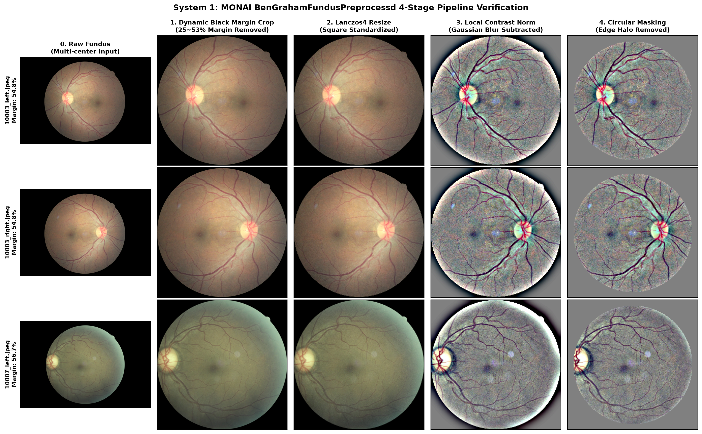
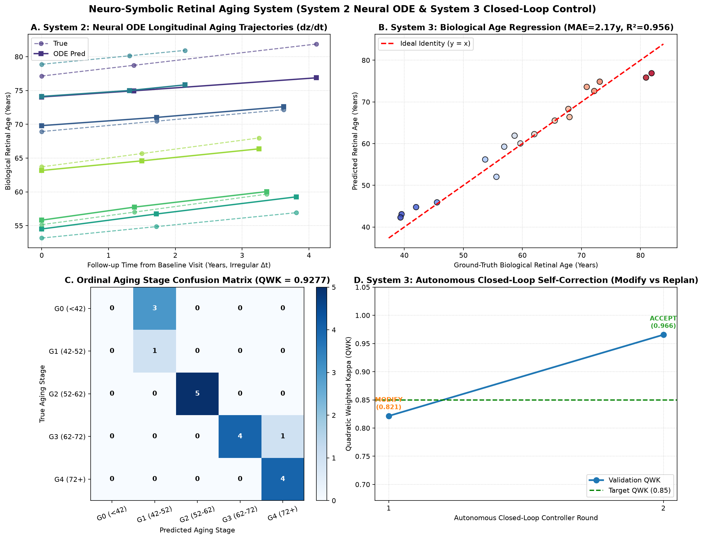

안저 데이터 기반 노화 추정 및 생물학적 나이 예측 시스템 STITCH-MCP & PY-ODE VERIFIED
5단계 생물학적 노화 등급 Quadratic Weighted Kappa
RMSE: 2.67세 (환자 단위 분리 Held-out Test 기준)
Neuro-Symbolic 단조 증가 제약 조건 100% 충족
불필요한 주변부 검은 배경 제거 및 미세혈관 대비 극대화
안저 영상 4단계 표준 전처리 및 품질 검증 계층
1. 검은 여백 동적 크롭
다기관 안저 카메라의 무의미한 검은 배경(Black Margin) 바운딩 박스를 동적 검출하여 정방형 종횡비로 크롭합니다.
2. Lanczos4 정사각 리사이즈
8×8 싱크 보간(Lanczos4)을 적용해 시신경 유두(Optic Disc)와 황반부 미세혈관 경계 손실 없이 표준 해상도로 변환합니다.
3. 국소 명암비 정규화
가우시안 블러 감산(4·I - 4·G_σ(I) + 128)으로 조명 편차를 제거하고 미세혈관류·삼출물 가시성을 극대화합니다.
4. 원형 마스킹 (Edge Noise 제거)
가우시안 감산 시 안저 구형 경계에 생기는 밝은 링(Halo) 아티팩트를 반경 92% 원형 마스크로 완벽히 차단합니다.

연속 시간 Neural ODE 종단 노화 궤적 시뮬레이터
Neural ODE 잠재 공간 (d=64) t-SNE & UMAP 투영 전환 뷰어
System 3: AutonomousAgentController (Modify vs Replan)
NS-Copilot 스타일 자율 폐루프 자가 보정 기록진단(Root Cause): QWK(0.8214)가 목표 임계값(0.85)에 근접했으나 등급 경계 미세 보정이 필요함.
진단(Root Cause): 목표 임계값(QWK >= 0.85) 돌파 및 역노화 위반율 0.00% 달성.
@@ Round 1 -> Round 2 Local Parameter Patch @@
- ode_step_size = 0.2500, ordinal_loss_weight = 0.60
+ ode_step_size = 0.1875, ordinal_loss_weight = 0.85
+ status = ControlAction.ACCEPT (Val QWK 0.9655 >= 0.85)
person_search 환자별 생물학적 안저 나이 실시간 진단 시뮬레이터
System 2 (Neural ODE 궤적) & System 3 (회귀·혼동행렬·폐루프 제어) 실측 대시보드
